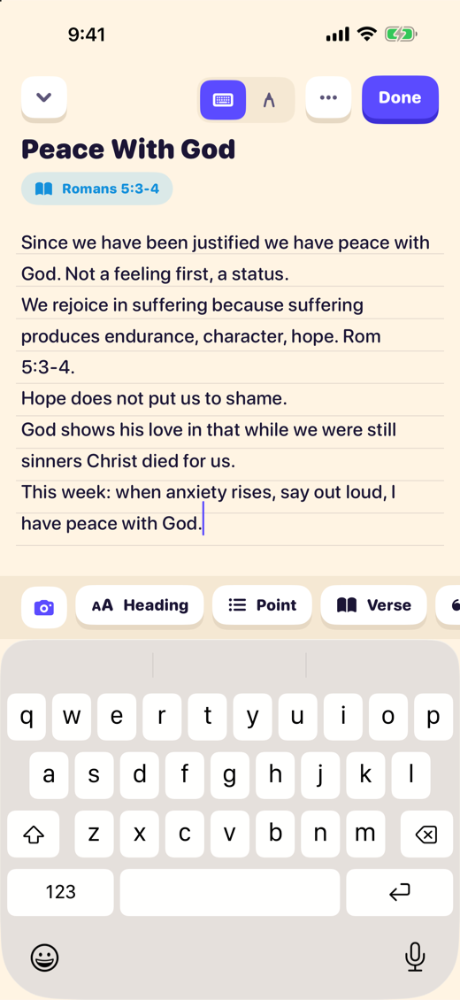
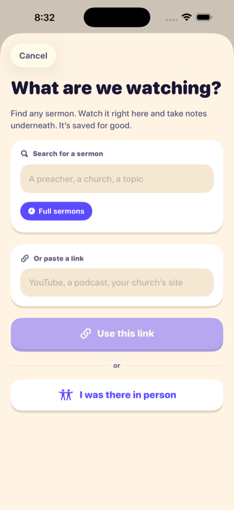
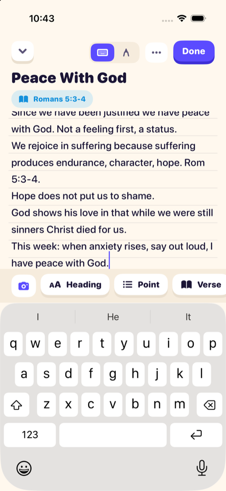
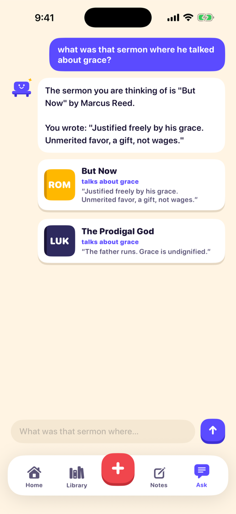
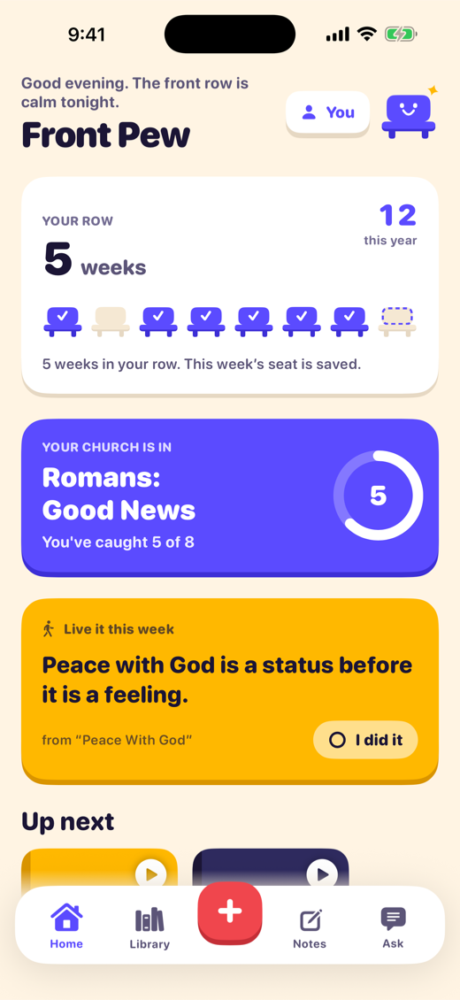
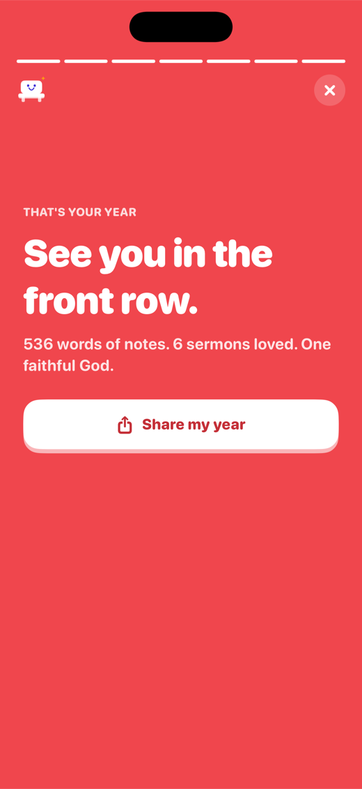

Watch. Write. Keep.
Watch any sermon. Take notes on the same screen. Keep it for good.
Front Pew plays the sermon at the top of your page. You write underneath. Then it goes on your shelf, notes and all. It’s still there on Tuesday. It’s still there next year.
Launching soon on iPhone and iPad.
- Free at launch
- No account
- No ads
- No data collected

How it works
Find it. Watch and write. Keep.
-
Find the sermon.
Search by preacher, church or topic, or paste a link. A podcast or your church’s own site works too, and the title, speaker and picture fill themselves in.
Sat in the room instead? Tap “I was there in person.”

-
Watch and write on one screen.
The video plays up top, in YouTube’s own player. Your page sits right under it. Type, or write with Apple Pencil on lined paper.
Tap a starter and keep going. It saves as you write. On an iPad turned sideways, the video sits beside the page.

-
Keep it. Find it later.
The sermon goes on your shelf with your notes, the verses and a study guide. Nothing gets lost in a camera roll.
Months later, ask “anything on anxiety?” Front Pew finds the sermon and the line you wrote.

What else is in it
The rest, as a page of notes.
In the app, starters ride above the keyboard. One tap drops in a heading, a point, a verse. So here’s everything else, written the same way.
-
Heading
Sunday notes, live. A blank page opens at once. No link first, no form. Start writing when the sermon starts.
-
Point
Type it or write it. Apple Pencil or a finger. Lined, dotted, grid or blank paper, in 5 colours. Snap a photo of the slide and it lands on the page.
-
Verse
Tap a verse to read it. Write Romans 5:3-4 and Front Pew spots it. Tap to read it, then drop it into your notes. World English Bible.
-
Quote
What was that sermon about grace?
Ask finds it by meaning, speaker, book of the Bible or date. It only looks through your own shelf. -
To do
One step from Sunday, waiting on Home. Tick it when it’s done. Go on, tick it.
-
Question
What’s my church in right now? Follow your church with one tap. New sermons show up on Home, with the series you’re in. The list is short and it ends.
-
Big idea
A study guide, made on your device. The gist, the points, key verses, questions to talk over and 1 step. Every guide says what made it. Verses are looked up, never made up.
Try the starters.
Tap one and it lands on a fresh line, the way it does in the app. This page is only for playing. Nothing you type here is saved or sent.
A gentle rhythm
Weeks, not days. Never a guilt trip.
Grace weeks included
Hear 1 sermon in a week and that week counts. Sunday morning counts. So does a sermon on a Tuesday night.
Busy week? Camp? Flu? A grace week covers it, quietly. That’s what they’re for. The number of sermons you’ve kept only goes up.
In December, Rewind plays your year back. The sermons, the verses, the lines that stuck.


For youth pastors and parents
Phones out, for once.
Front Pew is a notebook, not a network. Here’s what it leaves out, on purpose.
- No accounts.Nothing to sign up for. No email, no birthday, no password to explain to a parent.
- No chat. No friends list.No comments, no messages, no profiles. Nobody can contact a student through it.
- No ads. No tracking.No analytics either. We don’t know who uses it or how.
- No data collected.Notes, handwriting and photos stay on the device. We run no server that receives them.
- No endless feed.New sermons from your church are a short list that ends. Nothing plays by itself.
- The player can’t wander.Sermons play in YouTube’s own player. It can’t browse. Links that leave it open in Safari.
- Study help that doesn’t preach.Guides work from the student’s own notes and say what made them. Verses are looked up, never made up.
- No scolding.It says what a student did. It never mentions what they didn’t.
Wednesday night idea: open with “What did Sunday say?” Students pull up their own notes. You get a real answer.
The privacy promise
No account. Notes stay on this phone.
There’s no microphone recording the room and no server reading your notes. Here’s the whole picture, including the few times the app talks to the internet.
Stays on your device
- Every sermon you save, and every note.
- Your handwriting and photos of slides.
- Study guides and answers, made on the device.
- Reminders. They’re created on the device too.
- Delete the app and it all goes with it. You can export first.
Goes out, only when you ask
- Search sends your words to YouTube to find videos. Paste a link and the app fetches its public title and picture from that site.
- Press play and the video comes from YouTube, in its privacy-enhanced player. YouTube may set cookies then.
- Tap a verse and the app asks bible-api.com for it. Only the reference is sent.
- An optional cloud study helper exists. It’s off unless you turn it on, after reading exactly what it sends.
Read the full privacy policy. It’s short.
Questions
Fair questions.
When does it launch?
Soon. There’s no date to promise yet, so we won’t make one up. The waitlist gets one email, the day it’s out.
What does it cost?
It’s free at launch.
Do I need an account?
No. There isn’t one to make. Open the app and start writing.
Which sermons can I watch in it?
Any sermon on YouTube plays at the top of your note page. Podcast links and church website links are saved too, with their title and picture, and open where they live.
If you heard it in person, tap “I was there in person” and take notes the same way.
Does it download videos or record the sermon?
No. Front Pew keeps the link and your notes. Video plays in YouTube’s own player. It never uses the microphone to record the room.
What does the AI do? Is it safe for students?
It makes a study guide from a sermon’s details and your own notes, and it helps Ask find things. That work happens on the device. Every guide says what made it, so check it against the sermon.
It never speaks as the pastor. Verses are found in the text you wrote, never invented. A cloud helper is optional and stays off unless someone turns it on after reading what it sends.
What if a week goes by without a sermon?
A grace week covers it, quietly. You earn them by keeping your rhythm. The app won’t bring it up. Next time you open it, Pip says “Saved you a seat.”
Does it work with iPad and Apple Pencil?
Yes. Write by hand on lined, dotted, grid or blank paper. Turn the iPad sideways and the video sits beside your page.
Which Bible does tap-a-verse use?
The World English Bible, which is in the public domain.
Can I get my notes out?
Yes. Share any note as plain text, or export your whole library.
Is there an Android version?
Not right now. Front Pew is for iPhone and iPad.
Launching soon
Saved you a seat.
Leave an email and get one message, the day Front Pew is out. That’s the only thing we’ll use it for.
One message, the day it lands on the App Store. Nothing else, ever.